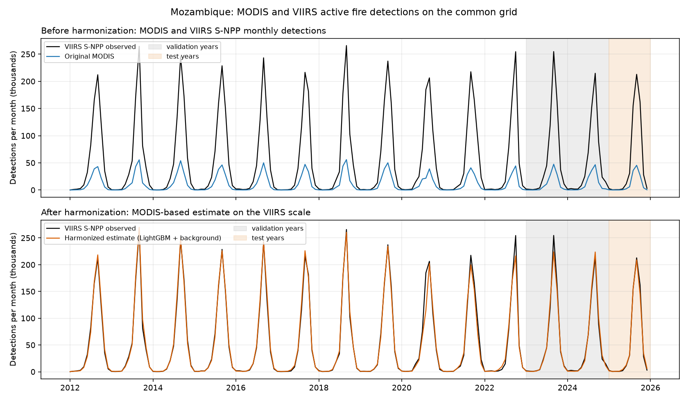
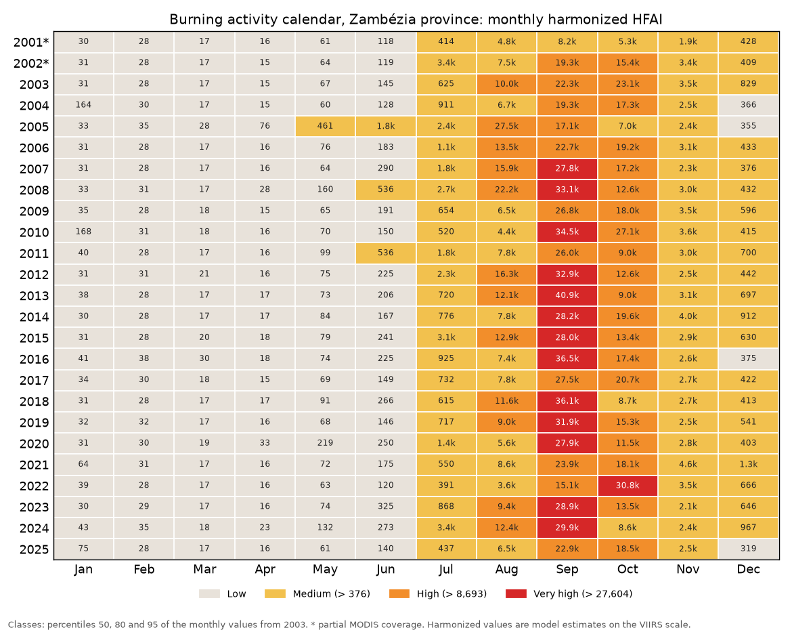

MODIS–VIIRS Fire Data Harmonization and Burning Activity Calendar
Challenge 09 — Harmonization of MODIS and VIIRS Hot Spots
Team NYELETI · Case study: Mozambique · Record: 2001–2025
Satellites have tracked active fires for more than two decades, but the record is split across sensors that cannot be compared directly.
Fire managers need one consistent calendar of when and where burning has occurred.
A web application that learns the MODIS→VIIRS relationship and rebuilds a single burning-activity calendar.
Original NASA detections are never overwritten. Observed and estimated values stay in separate columns.
| Product | Sensor | Years | Role |
|---|---|---|---|
| MCD14ML C6.1 | MODIS Terra/Aqua | 2001–2025 | Model input |
| VNP14IMGTML | VIIRS S-NPP | 2012–2025 | Reference / training target |
| VJ114IMGTML | VIIRS NOAA-20 | 2020–2025 | Map + evaluation ceiling |
| NASA GIBS | Blue Marble / true colour | — | Base maps |
Source: FIRMS country yearly archive (standard processing). No synthetic fire data.

HFAI by province and day:
| Method | RMSE | R² |
|---|---|---|
| Original MODIS | 122.6 | 0.57 |
| Linear regression | 79.7 | 0.82 |
| LightGBM + bg | 65.0 | 0.88 |
National 2025: MODIS 122k · VIIRS 610k · harmonized 602k (98.7% of VIIRS).

Example: monthly calendar for Zambézia province.
Known limits: weak at single cell-day scale; MODIS gaps pass into the series; anomalies are retrospective, not forecasts.